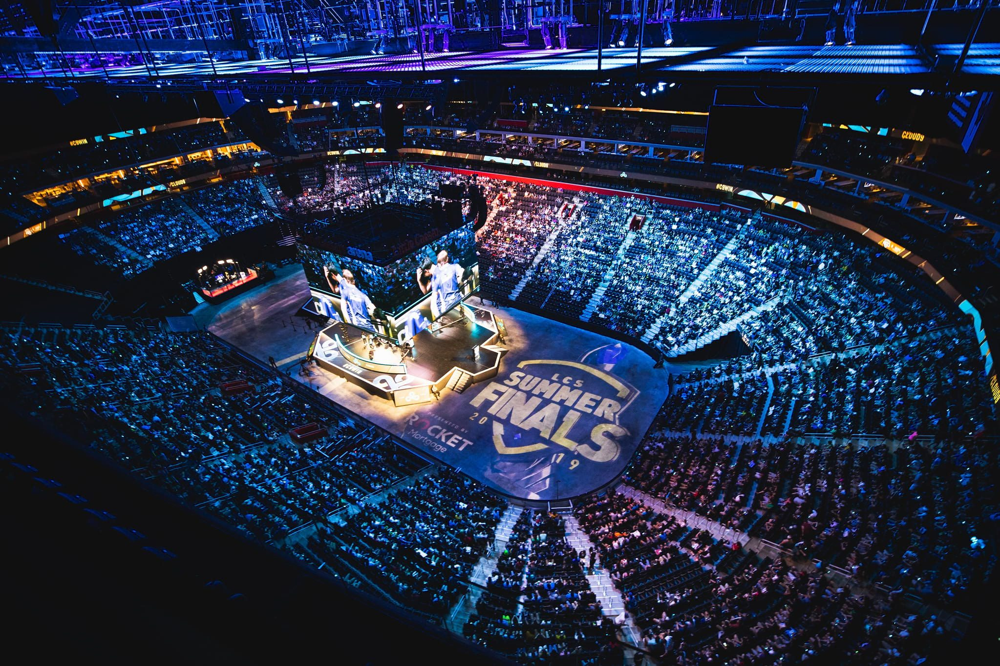

The increased spending bubble within the LCS and LEC are impacting some of the best
players by not giving them the opportunity to play in the upcoming spring 2022 season.

This is a photo of the 2019 LCS Summer Finals that were held in Detroit Michigan
When a team signs a player to play for them they must negotiate a contract that
says how long the player will play and how much they will be paid but, there is
another part to the contract. They can also negotiate to have a buyout on that player
meaning that if both teams and the player agree then another team could buy the player
to have them play on their team instead. (Source 2)
Over the course of the LCS the money teams are willing to spend on their players and
staff has been consistenty rising, to the point where teams are spending 11+ million
dollars just for a player to play on their team for one year. This massive spending
can be seen as a good thing for the LCS because it is showing its growth over the
past couple years however, this could be hinting at the league's biggest dip in
viewership it has seen to date.
During the 2020 and 2021 season many people started to believe that the inflated
money spending is just a bubble and would soon pop. It turns out that, that was
partially correct, during the 2021 off season fans watched as their favorite players
failed to find a new team because they were stuck behind a massive buyout that
other teams didn't want to pay.
This situation didn't just happen overnight, it all starts back in the 2020 offseason
when the big 3 NA teams (Cloud9, Team Liquid, and TSM) spent large to import the best
players they could from around the world. Those players being Perkz, Alphari, and
Swordart. All with the hopes of being able to prefor better internationally
than in past years
The first team in the big three to be elimanated was TSM who did not place
top three during the summer 2021 season, making them unable to qualify to play
at worlds - the biggest Esport event ever with a peak viewership of over 4 million.
Team Liquid had a decent peformance in the groups stange during worlds but was unable
to make quarterfinals which while the team hoped to go farther that was their more
realistic goal.
Finally was C9 who after being put into the hardest group possible
was able to make an upset and managed to make it out and into the quarterfinals
which maked the first time a team from North America made it into quarterfinals.
Unfortunately they were then eliminated from the tournament
Overall North America and Europe did not have an awful year internationally but
the communities opinion on spending big to find the best players possible was
quickly changing this lead to many teams focusing more on player development
over the next few years. As teams began rearagning their rosters for the 2022
season many big name players would not be able to find a team due to other teams
not willing to spend money on the large buyouts tied to their contracts.